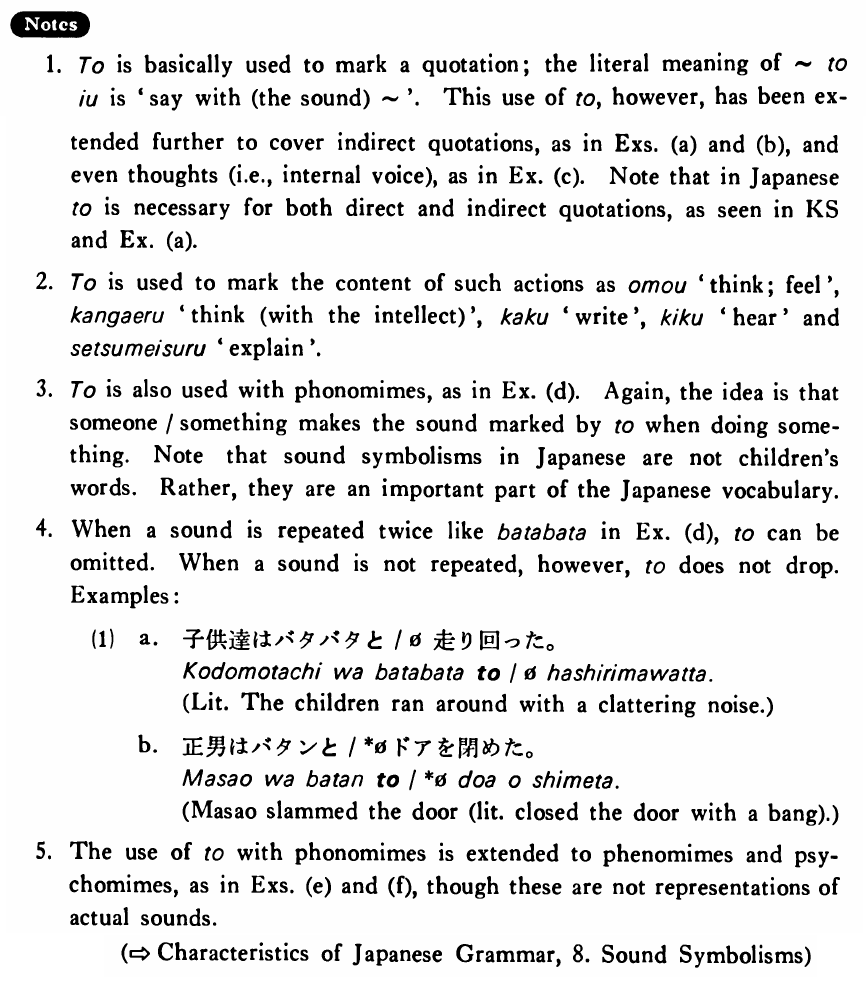

と (3) (B. 478)
- (ks).
- ヒルさんは私に日本語で「こんにちは。」と言った・言いました。
- Mr. Hill said to me in Japanese, “Hello!”
- (a).
- トムは日本へ行きたいと言っている。
- Tom says that he wants to go to Japan.
- (b).
- これは十六世紀に建てられたと書いてあります。
- It is written that this was built in the sixteenth century.
- (c).
- 私はバスで行こうと思う。
- I think I will go by bus.
- (d).
- 子供達はバタバタと走れ回った。
- The children ran around with a clattering noise.
- (e).
- 真知子はしっかりと私の手を握った。
- Machiko grabbed my hand firmly.
- (f).
- ベンはむっつりと座っている。
- Ben is sitting sullenly.
